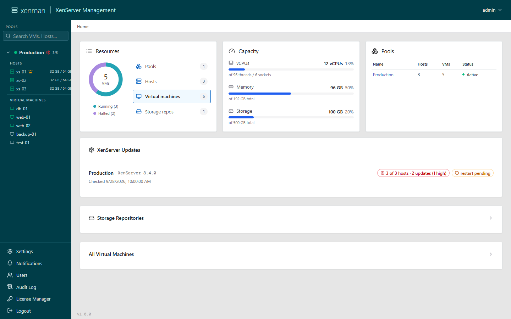
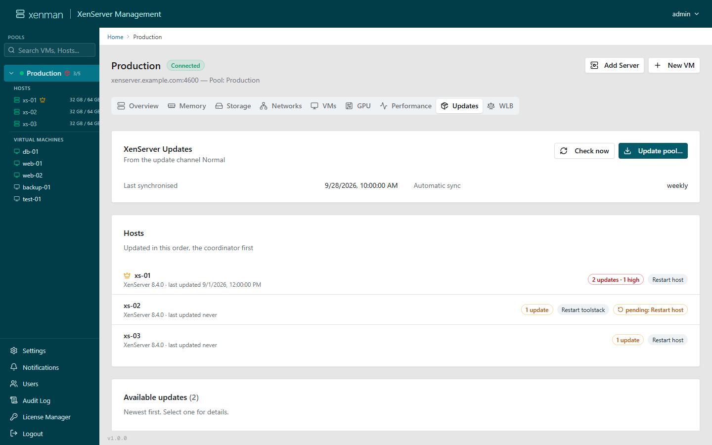
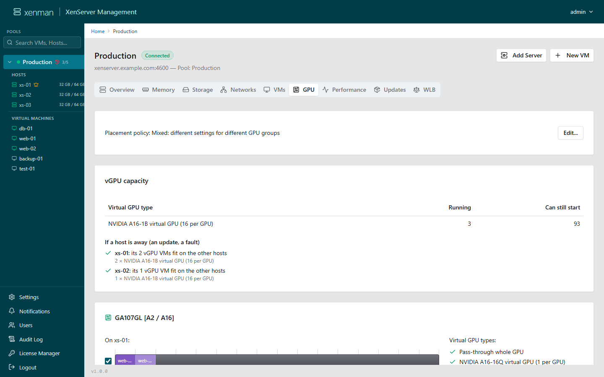

Pools & hosts
Several pools at once, maintenance mode, a new pool coordinator, adding and removing servers, control domain memory and certificate pinning.
For XenServer & XCP-ng
XenMan manages pools, hosts and virtual machines from any browser – with consoles, storage, networking, GPUs and host updates. Many workflows follow XenCenter's, so it feels familiar from the first click.
Preview Release candidate The next version early – best on a test pool.
Runs as a Docker container or as a ready-to-import XenServer appliance.

From a single VM to several pools across sites – the tasks you do every day, without a Windows client.
Several pools at once, maintenance mode, a new pool coordinator, adding and removing servers, control domain memory and certificate pinning.
Create, import (XVA), start, stop, migrate, copy and delete. Templates from VMs and snapshots; edit CPU, memory, disks, network and boot settings.
VNC right in the browser with keyboard macros and clipboard paste. RDP files for Windows VMs with one click.
Create and repair SRs, scan iSCSI targets for IQNs and LUNs, reclaim space. Networks, bonds, VLANs and the management interface.
Updates host by host: VMs moved away and back, restarts when XenServer asks, Workload Balancing paused meanwhile – and a mail when it's done.
Physical GPUs and vGPUs, placement policy and allowed types. Read caching for VMs streamed by Citrix Provisioning.
Pools at other sites behind NAT or a firewall's virtual IP – consoles and performance graphs keep working there too.
Performance graphs, alerts, events and an audit log of who did what. Syslog forwarding to your log server.
Admin, Operator and Viewer roles, invitations by mail, two-factor sign-in and sign-in with Microsoft Entra ID.
Familiar from XenCenter, at home in the browser – in light and dark.






Yes. The core of XenMan has been running in a real production environment for over eight months. New features keep coming, but the foundation is stable.
XenMan focuses on everyday pool and VM administration. A few specialised tasks are not included yet – keep XenCenter at hand for those.
Pick what fits your environment. Sign in with admin / admin – XenMan asks for a new password first.
A ready-to-import XenServer VM: Debian 13 with XenMan, as a single .xva file from the releases.
xe vm-import filename=xenman-appliance-<version>.xvaOr in XenCenter under File → Import. Start the VM; its console shows the address. Updates come as signed packages, Debian security updates install on their own.
Download applianceRuns the published image ghcr.io/xenman-project/xenman, data stays in a volume.
curl -O https://raw.githubusercontent.com/xenman-project/xenman/main/docker-compose.yml
docker compose up -dThen open https://<host>:3001. Port 3000 only redirects there.
Node.js 24 or newer and a XenServer or XCP-ng host.
git clone https://github.com/xenman-project/xenman.git
cd xenman
npm install
npm run build
npm startA tool that manages your hypervisors has to be careful. XenMan is.
A certificate is created on first start, or bring your own. Plain HTTP redirects, responses carry HSTS.
Like SSH host keys: XenMan only talks to hosts presenting a certificate the pool trusts – and tells admins when one changes.
XenServer and mail passwords are stored AES-256-GCM encrypted. On the appliance the key is sealed to the machine (and its TPM).
Admin, Operator and Viewer, per pool. Authenticator apps, optionally required – or Microsoft Entra ID with its MFA.
Every action is recorded with its user, so you always know who did what, and when.
The browser never sees the pool's XenServer session – only a handle that works through XenMan.
XenMan is developed with an AI coding assistant: much of the code, the tests and the documentation were written by AI, directed by its maintainers and tested on real XenServer pools. Where XenMan behaves like XenCenter, that behaviour is taken from XenAdmin's published source rather than guessed.
As with any tool that manages production infrastructure, try it on a test pool first.